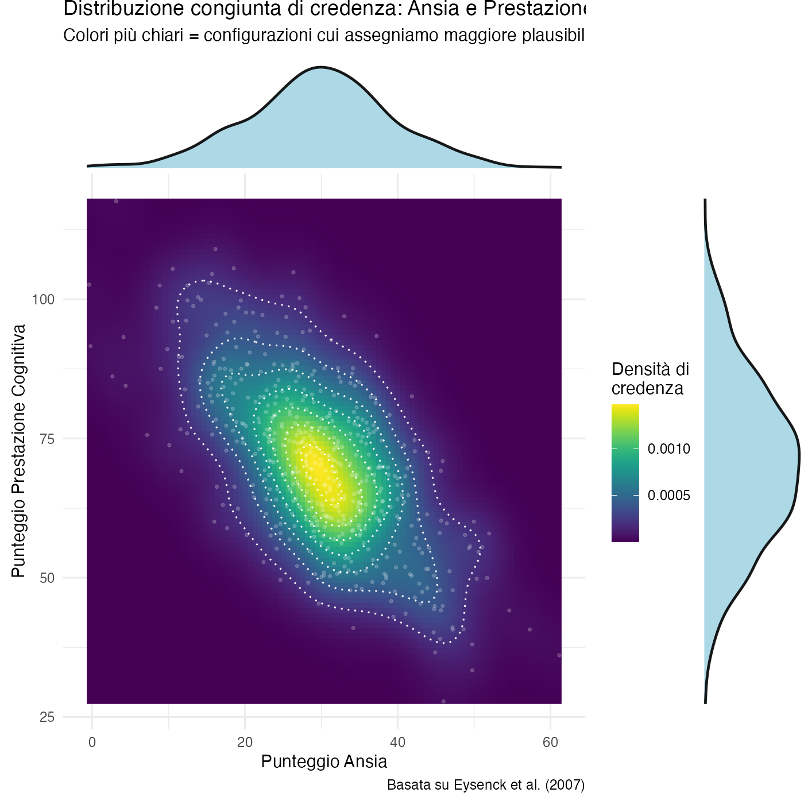

10 Probabilità congiunta
Introduzione
Nel Capitolo 2 abbiamo visto che le tabelle di probabilità congiunta sono lo strumento fondamentale per rappresentare credenze coerenti su sistemi con più variabili. Abbiamo imparato che, una volta specificata una distribuzione congiunta coerente, tutte le altre quantità probabilistiche di interesse, come le distribuzioni marginali e condizionate, nonché le probabilità di eventi complessi, ne derivano automaticamente attraverso operazioni di marginalizzazione e condizionamento.
In questo capitolo e nel successivo, estendiamo e approfondiamo tale discussione, esplorando le proprietà matematiche delle distribuzioni congiunte e mostrando come queste permettano di esprimere l’incertezza simultanea su più variabili psicologiche. Nell’approccio bayesiano, la distribuzione congiunta non descrive le “frequenze a lungo termine” delle combinazioni di eventi, ma piuttosto il nostro grado di credenza razionale che specifiche configurazioni si verifichino, in base al nostro attuale stato di conoscenza.
Panoramica del capitolo
- Definizione epistemica di distribuzione congiunta per variabili discrete e continue.
- Le proprietà fondamentali come vincoli di coerenza.
- Derivazione di distribuzioni marginali e condizionate dalla congiunta.
- Indipendenza come caso speciale di fattorizzazione.
- Estensione al caso continuo con interpretazioni epistemiche.
- Il ruolo della distribuzione congiunta nell’inferenza bayesiana.
10.1 Distribuzione congiunta
Quando studiamo due variabili casuali, come l’ansia (\(Y\)) e la prestazione cognitiva (\(X\)), non ci interessa solo esprimere le nostre credenze sul loro comportamento individuale, ma anche su come si manifestano insieme. La distribuzione congiunta descrive proprio questo: il nostro grado di credenza razionale che \(X\) e \(Y\) assumano contemporaneamente determinati valori, in base al nostro attuale stato di conoscenza.
Definizione 10.1 Una distribuzione congiunta assegna a ogni possibile configurazione \((x, y)\) un grado di credenza che riflette quanto riteniamo plausibile che le due variabili assumano simultaneamente quei valori.
- Caso discreto (variabili che assumono valori distinti, come categorie o conteggi):
\[ p(x, y) = P(X = x, Y = y) \] rappresenta la nostra credenza nella configurazione \((x, y)\).
- Caso continuo (variabili misurate su scale numeriche continue, come punteggi o tempi di reazione):
\[ f(x, y) \] rappresenta la densità di credenza nella regione intorno a \((x, y)\).
Interpretazione epistemica: La distribuzione congiunta non afferma “cosa accadrà” o “quale proporzione di casi si verificherà a lungo termine”, ma esprime “quanto riteniamo plausibile” ogni possibile configurazione, alla luce delle informazioni attualmente disponibili (letteratura scientifica, dati preliminari, vincoli logici, ecc.).
Grazie a questa rappresentazione delle nostre credenze possiamo rispondere a domande come: Quanto è plausibile che uno studente con ansia elevata ottenga una prestazione insufficiente, dato ciò che sappiamo dalla letteratura e dalla nostra esperienza clinica?
10.2 Proprietà fondamentali come vincoli di coerenza
Nel Capitolo 2 abbiamo visto che gli assiomi di Kolmogorov non sono leggi della natura, ma vincoli logici per evitare incoerenze (Dutch Book). Questi stessi vincoli si applicano anche alle distribuzioni congiunte.
Perché una distribuzione congiunta possa rappresentare credenze coerenti, deve soddisfare i seguenti requisiti:
Queste proprietà sono conseguenze dirette dei vincoli di coerenza discussi nel Capitolo 2. Violarle significa esporre le nostre credenze a incoerenze logiche dimostrabili.
10.3 Dalla tabella 2×2 alle distribuzioni multidimensionali
Nel Capitolo 2 abbiamo lavorato principalmente con tabelle congiunte 2×2 (due variabili binarie). Ora estendiamo questo framework a situazioni più complesse.
10.3.1 Tabelle con più categorie
Consideriamo un esempio tratto dalla letteratura psicologica: la relazione tra ansia (\(Y\)) e prestazione cognitiva (\(X\)) in studenti universitari. La ricerca indica spesso una relazione negativa tra questi fattori (Eysenck et al., 2007).
Costruiamo una distribuzione congiunta che rappresenti le nostre credenze su queste variabili:
- ansia: bassa (0), media (1), alta (2);
- prestazione cognitiva: insufficiente (0), sufficiente (1), buona (2).
10.3.2 Costruzione epistemica della tabella congiunta
Come nel Capitolo 2, la nostra distribuzione congiunta deve integrare diverse fonti di conoscenza.
- Evidenza dalla letteratura: studi come quello di Eysenck et al. (2007) documentano una relazione negativa tra ansia e prestazione.
- Principi di coerenza: vincoli di Fréchet, normalizzazione, additività.
- Eventuali dati preliminari: osservazioni da studi pilota o esperienza clinica.
Basandoci su queste fonti, potremmo costruire la seguente tabella che rappresenta i nostri gradi di credenza:
| Ansia Bassa (0) | Ansia Media (1) | Ansia Alta (2) | Marginale | |
|---|---|---|---|---|
| Insufficiente (0) | 0.05 | 0.10 | 0.15 | 0.30 |
| Sufficiente (1) | 0.15 | 0.20 | 0.10 | 0.45 |
| Buona (2) | 0.10 | 0.10 | 0.05 | 0.25 |
| Marginale | 0.30 | 0.40 | 0.30 | 1.00 |
Interpretazione epistemica: ogni cella rappresenta il nostro grado di credenza in una specifica configurazione. Ad esempio:
- \(P(X=1, Y=1) = 0.20\): crediamo che la configurazione “prestazione sufficiente con ansia media” sia relativamente plausibile.
- \(P(X=2, Y=2) = 0.05\): la configurazione “buona prestazione con alta ansia” è meno plausibile, in linea con quanto riportato in letteratura.
Verifica di coerenza:
#> Somma di tutte le credenze: 1
#> ✓ Coerenza verificata: la somma è esattamente 110.3.3 Significato delle probabilità nella tabella
A differenza di un’interpretazione frequentista che direbbe: “Il 20% degli studenti ha un’ansia media e una prestazione sufficiente”, nell’approccio bayesiano diciamo:
“Dato il nostro stato di conoscenza (basato sulla letteratura, su dati preliminari, e su vincoli di coerenza), assegniamo una credenza pari a 0.20 alla configurazione ‘ansia media e prestazione sufficiente’. Questo riflette quanto riteniamo plausibile questa combinazione prima di osservare un nuovo campione di dati.”
Se raccogliessimo nuovi dati, potremmo aggiornare queste credenze utilizzando il teorema di Bayes, come vedremo nei capitoli successivi.
10.4 Distribuzioni marginali: derivazione dalla congiunta
Nel Capitolo 2 abbiamo visto che le probabilità marginali derivano dalla distribuzione congiunta mediante la somma (o l’integrale) su una dimensione. Questo principio si estende naturalmente anche alle tabelle più grandi.
Definizione 10.2 La distribuzione marginale di una variabile si ottiene sommando (marginalizzando) la distribuzione congiunta rispetto alle altre variabili. Essa rappresenta le nostre credenze su una variabile quando non condizionamo sull’altra.
Per la variabile ansia (\(Y\)):
\[ P(Y=y) = \sum_{x} P(X=x, Y=y). \]
Dalle marginali della nostra tabella:
- ansia bassa: \(P(Y=0) = 0.05 + 0.15 + 0.10 = 0.30\).
- ansia media: \(P(Y=1) = 0.10 + 0.20 + 0.10 = 0.40\).
- ansia alta: \(P(Y=2) = 0.15 + 0.10 + 0.05 = 0.30\).
Interpretazione epistemica: la distribuzione marginale \(P(Y)\) rappresenta le nostre credenze sull’ansia quando non conosciamo (o non vogliamo condizionare su) il livello di prestazione cognitiva. Essa “integra” su tutte le possibili prestazioni, pesandole con le credenze congiunte.1
#> Distribuzione marginale della Prestazione:
#> Insufficiente Sufficiente Buona
#> 0.30 0.45 0.25
#>
#> Distribuzione marginale dell'Ansia:
#> Bassa Media Alta
#> 0.3 0.4 0.3Possiamo usare queste marginali per rispondere a domande come:
\[ P(X \geq 1) = P(X=1) + P(X=2) = 0.45 + 0.25 = 0.70 \]
Interpretazione: dato il nostro livello di conoscenza, crediamo con un grado di certezza pari a 0.70 che uno studente scelto a caso raggiunga almeno la sufficienza, indipendentemente dal livello di ansia.
10.5 Indipendenza come fattorizzazione della congiunta
Nel Capitolo 2 abbiamo discusso l’indipendenza nel contesto degli eventi. Ora estendiamo questo concetto alle variabili casuali.
Definizione 10.3 Due variabili casuali \(X\) e \(Y\) sono indipendenti (dal punto di vista delle nostre credenze) se la conoscenza di una non modifica le nostre credenze sull’altra. Formalmente, ciò accade quando la distribuzione congiunta si fattorizza nel prodotto delle distribuzioni marginali:
\[ p(x,y) = p(x) \cdot p(y) \quad \text{oppure} \quad f(x,y) = f(x) \cdot f(y) \]
Interpretazione epistemica: l’indipendenza significa che la nostra credenza su \(X\) non cambia quando apprendiamo il valore di \(Y\), e viceversa. Le due variabili sono epistemicamente separate nel nostro stato di conoscenza.
10.5.1 Verifica dell’indipendenza
Nel nostro esempio, verifichiamo se ansia e prestazione sono indipendenti nella nostra rappresentazione delle credenze:
# Se fossero indipendenti, dovremmo avere P(X=0,Y=2) = P(X=0) × P(Y=2)
p_x0_y2_observed <- tab_joint[1, 3] # 0.15
p_x0_y2_independence <- marg_prestazione[1] * marg_ansia[3] # 0.30 × 0.30#> P(X=0, Y=2) osservata: 0.15
#> P(X=0) × P(Y=2) sotto indipendenza: 0.09
#>
#> Le variabili sono indipendenti? NoCome suggerisce la letteratura (Eysenck et al., 2007), ansia e prestazione sono dipendenti nelle nostre credenze: crediamo che un’alta ansia renda meno probabili le buone prestazioni. Questa dipendenza è codificata nella struttura della distribuzione congiunta.
Implicazione: se le variabili fossero indipendenti, basterebbe conoscere le distribuzioni marginali per ricostruire completamente la distribuzione congiunta. Tuttavia, quando le variabili sono dipendenti (come nel nostro caso), la distribuzione congiunta contiene informazioni aggiuntive essenziali sulla struttura della loro relazione.
10.6 Distribuzioni congiunte e inferenza bayesiana
La distribuzione congiunta gioca un ruolo centrale nell’inferenza bayesiana, come anticipato nel Capitolo 2.
10.6.1 Il modello generativo bayesiano
In un’analisi bayesiana, si lavora con tre distribuzioni fondamentali:
- prior \(p(\theta)\): nostre credenze iniziali sui parametri;
- verosimiglianza \(p(y_1, \ldots, y_n \mid \theta)\): distribuzione congiunta dei dati condizionata ai parametri;
- posterior \(p(\theta \mid y_1, \ldots, y_n)\): credenze aggiornate sui parametri dopo aver osservato i dati.
10.6.2 Verosimiglianza come distribuzione congiunta
La verosimiglianza è una distribuzione congiunta particolare che rappresenta le nostre credenze sui dati che osserveremo, dati i valori ipotetici dei parametri \(\theta\).
Per dati indipendenti e identicamente distribuiti (i.i.d.), la distribuzione congiunta si fattorizza:
\[ p(y_1, y_2, \dots, y_n \mid \theta) = \prod_{i=1}^n p(y_i \mid \theta) \]
Interpretazione epistemica: se si assume che le osservazioni siano indipendenti da \(\theta\) (cioè, conoscere \(\theta\) rende le osservazioni epistemicamente indipendenti), allora la credenza sulla configurazione congiunta dei dati è il prodotto delle credenze sulle singole osservazioni.
10.6.3 Log-verosimiglianza
Per motivi di stabilità numerica, lavoriamo quasi sempre con la log-verosimiglianza:
\[ \log p(y_1, \dots, y_n \mid \theta) = \sum_{i=1}^n \log p(y_i \mid \theta) \]
Questo trasforma il prodotto in somma, evitando problemi di underflow numerico (il prodotto di molte probabilità piccole può generare numeri troppo piccoli per essere rappresentati dal computer).
Nota importante: il logaritmo è una trasformazione monotona, quindi massimizzare la log-verosimiglianza equivale a massimizzare la verosimiglianza. Ciò non cambia il valore di \(\theta\) che riteniamo più plausibile alla luce dei dati.
10.7 Il caso continuo: densità congiunte
Quando le variabili sono continue, la distribuzione congiunta è rappresentata da una densità \(f(x,y)\) piuttosto che da probabilità discrete. L’interpretazione epistemica rimane la stessa: la densità indica quanto riteniamo plausibile una determinata configurazione.
10.7.1 Visualizzazione: mappa termica della credenza
Possiamo visualizzare una densità congiunta come una mappa termica, in cui:
- asse X: punteggio dell’ansia;
- asse Y: punteggio della prestazione cognitiva;
- i colori più caldi indicano le configurazioni a cui assegniamo maggiore credenza.

Interpretazione epistemica della visualizzazione:
- La regione più chiara (centro-sinistra in alto) rappresenta le configurazioni a cui assegniamo la massima credenza: bassa ansia e buona prestazione.
- Le regioni più scure (angolo in alto a destra) indicano le configurazioni a cui attribuiamo una bassa probabilità: alta ansia con buona prestazione.
- La correlazione negativa visibile riflette la nostra conoscenza della letteratura (Eysenck et al., 2007).
10.7.2 Marginali e condizionali nel caso continuo
Nel caso continuo, le operazioni di marginalizzazione e condizionamento coinvolgono integrali invece di somme, ma l’interpretazione epistemica rimane invariata.
10.7.2.1 Densità marginale: proiettare la credenza su un asse
La densità marginale si ottiene integrando (marginalizzando) la densità congiunta:
\[ f_X(x) = \int_{-\infty}^{+\infty} f(x,y) \, dy \]
Interpretazione epistemica: la distribuzione marginale \(f_X(x)\) rappresenta le nostre credenze su \(X\) quando non conosciamo (o non condizionamo su) il valore di \(Y\). Essa “integra” su tutti i possibili valori di \(Y\), pesandoli con le credenze congiunte.
Visualizzazione: i grafici ai margini della figura mostrano le densità marginali. Questi grafici rappresentano le nostre credenze “proiettate” su ciascuna variabile singolarmente.
10.7.2.2 Densità condizionale: aggiornamento delle credenze
La densità condizionale risponde alla domanda epistemica: “Se venissi a conoscenza del fatto che la prestazione è esattamente di 40 punti, come dovrei aggiornare le mie credenze sull’ansia?”
\[ f_{X|Y}(x \mid y) = \frac{f(x,y)}{f_Y(y)}. \]
Interpretazione epistemica: si tratta di un’applicazione del condizionamento bayesiano. A partire dalla congiunta, “selezioniamo” solo le configurazioni compatibili con l’osservazione \(Y=y\) e rinormalizziamo per ottenere una distribuzione di credenza valida.
Visualizzazione mentale: immagina di prendere una “fetta verticale” della mappa termica corrispondente a un valore specifico di prestazione. Questa fetta, opportunamente normalizzata, rappresenta la distribuzione condizionale dell’ansia in relazione a quel valore di prestazione.
10.8 Perché le distribuzioni congiunte sono cruciali in psicologia
Riflessioni conclusive
La distribuzione congiunta costituisce lo strumento fondamentale per esprimere in modo coerente le nostre credenze riguardo a sistemi multivariati. In questo capitolo abbiamo esteso i concetti introdotti nel Capitolo 2, dimostrando come le tabelle congiunte 2×2 si generalizzino in tre direzioni principali.
In primo luogo, le tabelle con più categorie rappresentano un’estensione naturale per le variabili che presentano molti livelli. In secondo luogo, le densità continue emergono quando le variabili assumono valori su scale continue. Infine, nell’inferenza bayesiana, la verosimiglianza si configura essa stessa come una distribuzione congiunta.
Alcuni principi chiave ricorrono costantemente nell’analisi delle distribuzioni congiunte. La distribuzione congiunta rappresenta la rappresentazione più completa delle nostre credenze su un sistema. Tutte le altre quantità probabilistiche, come le distribuzioni marginali e condizionali, derivano direttamente dalla congiunta tramite operazioni matematiche ben definite. Le proprietà di coerenza, come la non negatività e la normalizzazione, sono vincoli logici piuttosto che mere convenzioni matematiche. L’indipendenza, infine, rappresenta un caso speciale in cui la distribuzione congiunta si fattorizza, una condizione che si verifica raramente nei fenomeni psicologici reali.
Nel prossimo capitolo affronteremo la quantificazione di un aspetto specifico delle relazioni espresse dalle distribuzioni congiunte: la tendenza alla covarianza lineare. Introdurremo la covarianza e la correlazione come indici numerici che sintetizzano in modo compatto la struttura di dipendenza lineare codificata nella distribuzione congiunta.
È fondamentale sottolineare che questi indici rappresentano soltanto dei riassunti della distribuzione congiunta. Sebbene catturino efficacemente l’aspetto lineare della relazione, la distribuzione congiunta contiene informazioni molto più ricche e complete riguardo alla struttura delle nostre credenze, informazioni che vanno ben oltre quanto possa essere espresso da un singolo indice numerico.
Bibliografia
Condizionare significa aggiornare o restringere le nostre credenze a un sottoinsieme dei casi possibili, assumendo che un certo evento o valore di una variabile sia noto. Ad esempio, \(P(Y \mid X=x)\) rappresenta la probabilità dell’ansia \(Y\) sapendo (cioè condizionando sul fatto) che la prestazione cognitiva \(X\) ha assunto il valore \(x\). In termini bayesiani, il condizionamento corrisponde all’atto di incorporare nuova informazione per modificare razionalmente le probabilità precedenti.↩︎